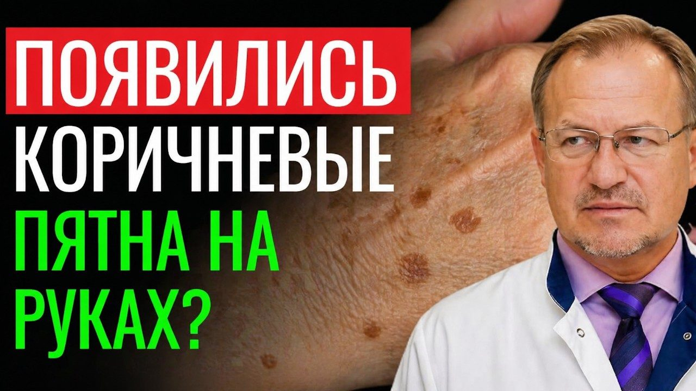
Материалы к выпуску
Рецепт "Чистая кожа" за 50 рублей! Травяной сбор, который восстановит печень и уберет высыпания.
Здесь протокол из этого выпуска. Скачайте и распечатайте — так проще не забывать о главном каждый день.
О чём кричит ваша кожа? 5 сигналов, которые нельзя игнорировать
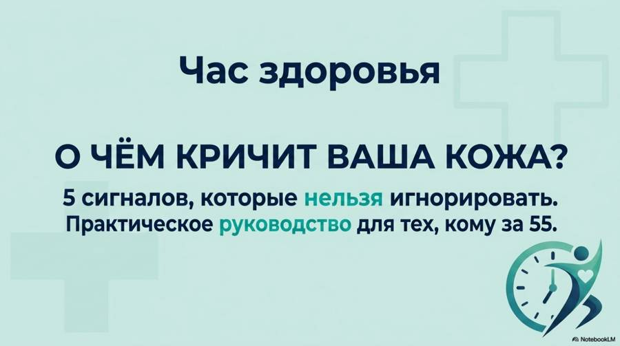
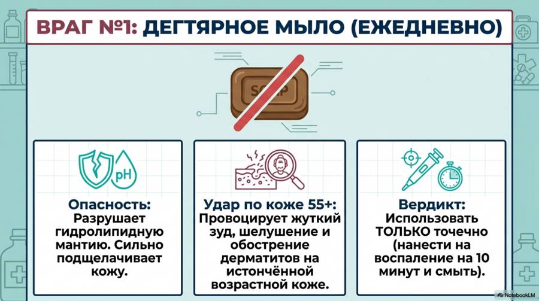
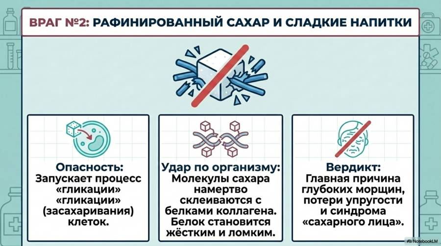
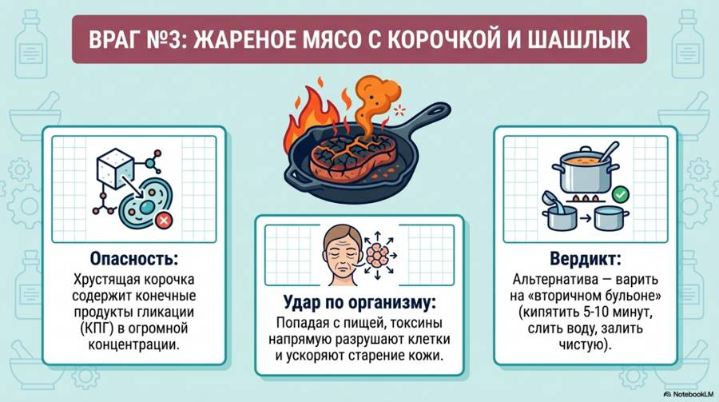
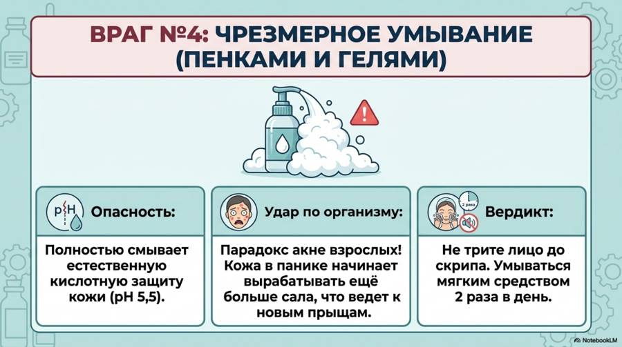
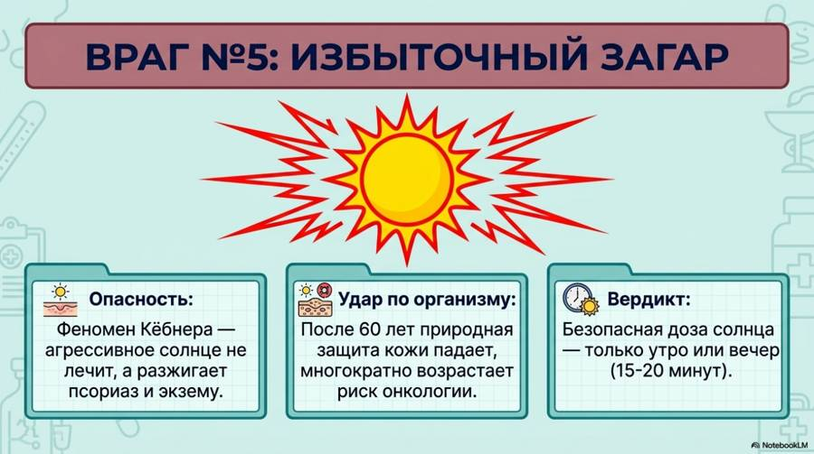
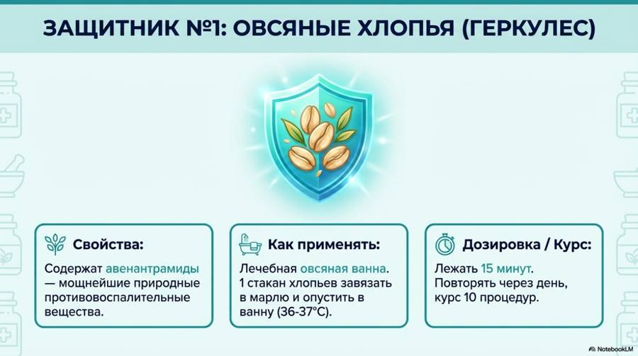
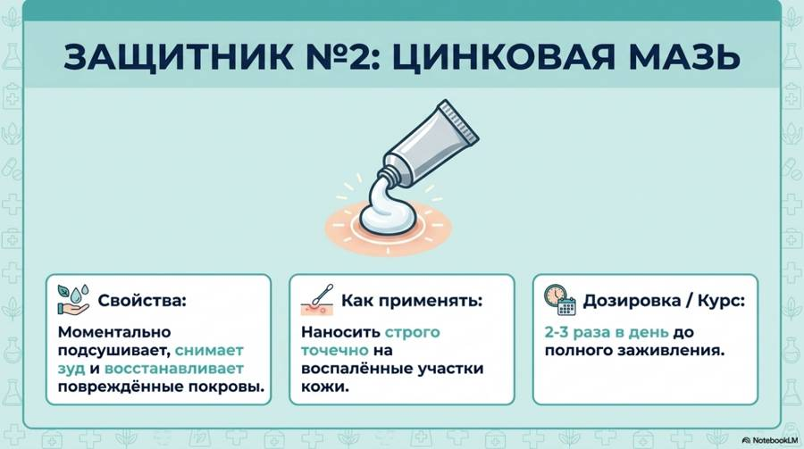
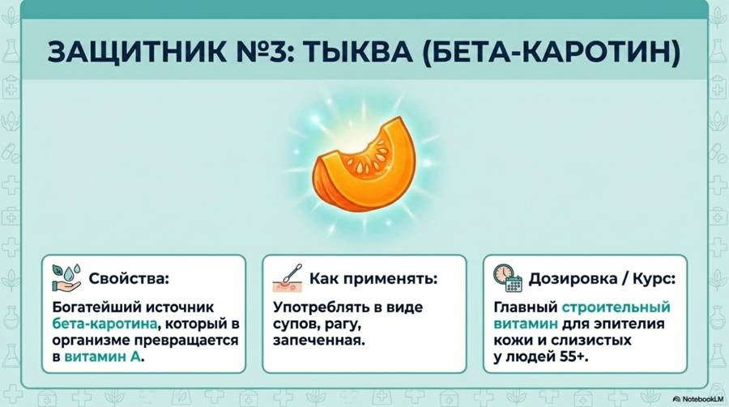
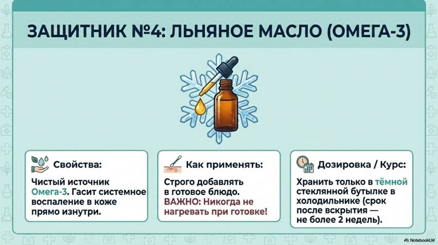
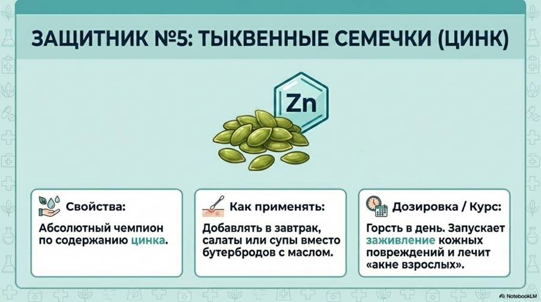
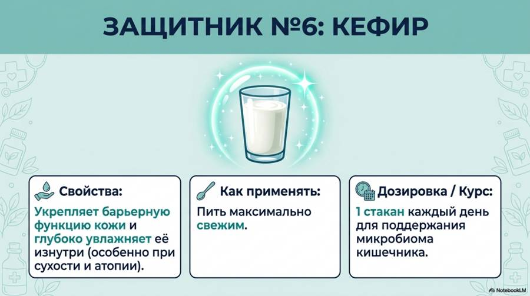
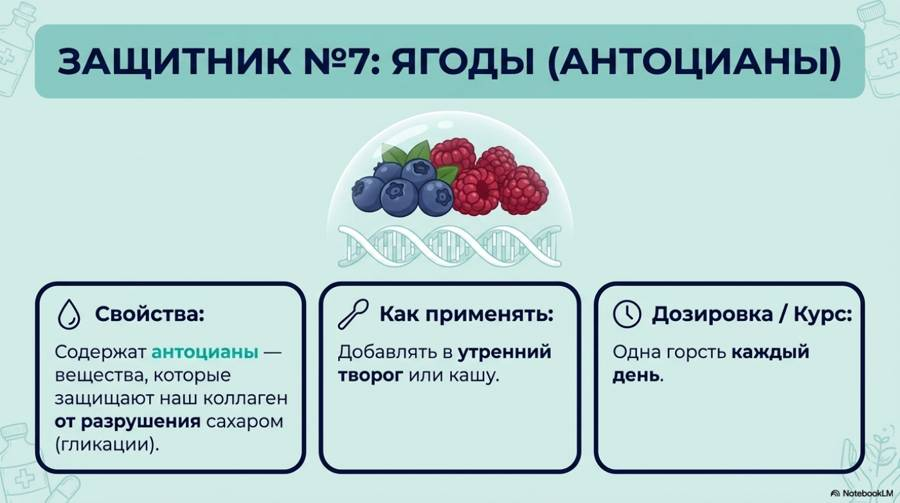
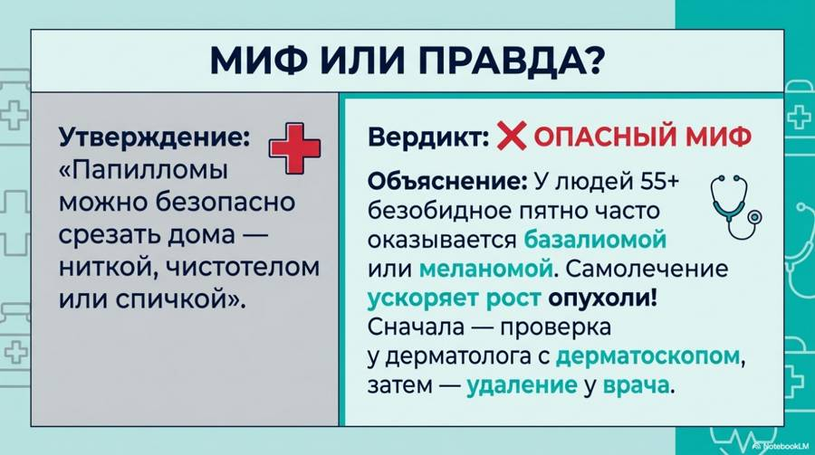
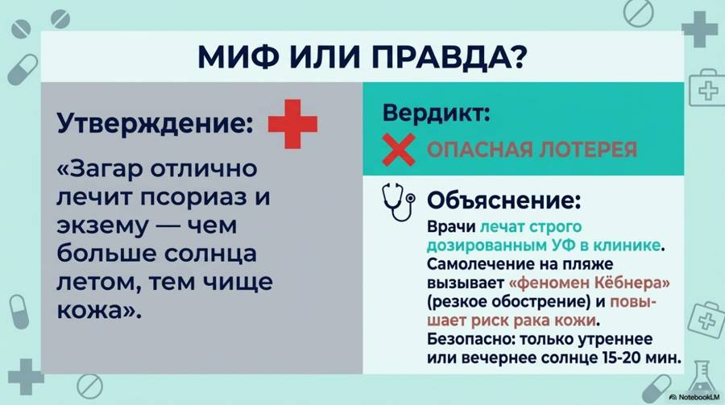
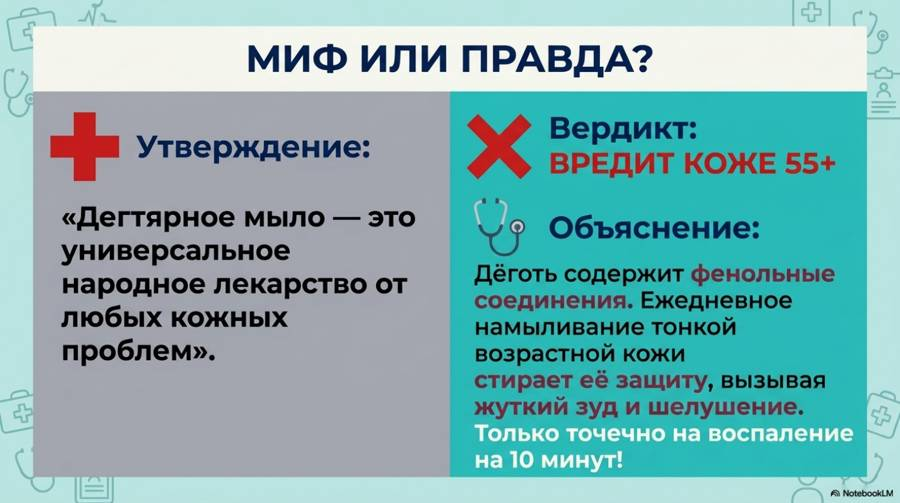
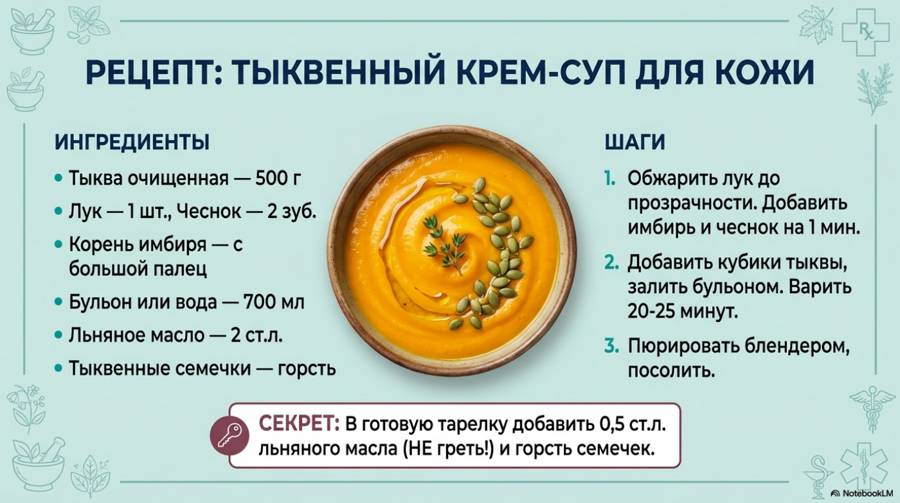
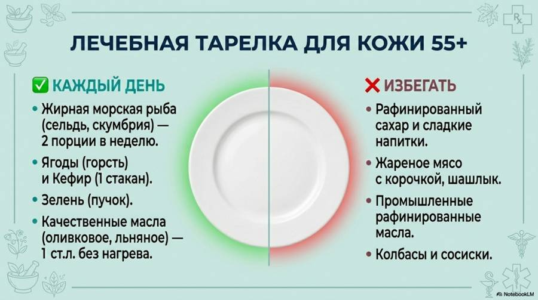
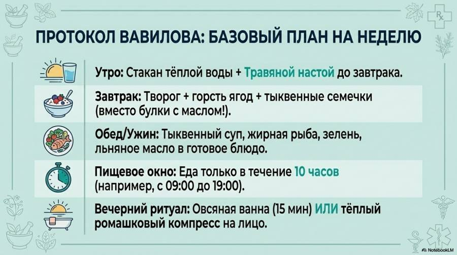
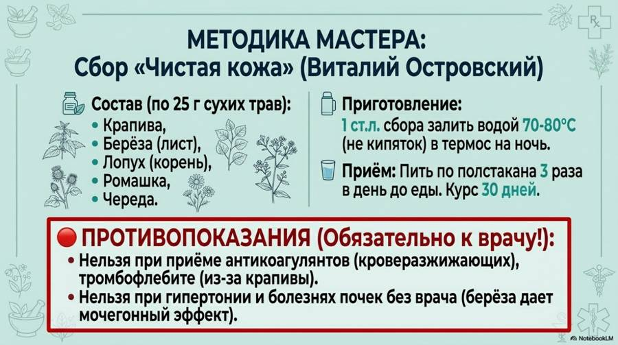
Новые выпуски и карточки — первыми в нашем Telegram-канале.
Открыть Telegram